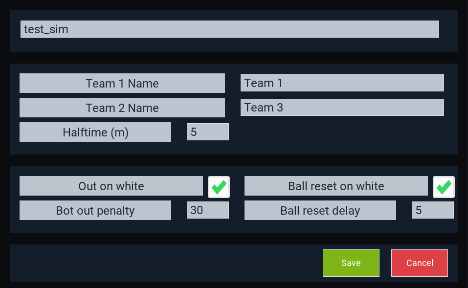
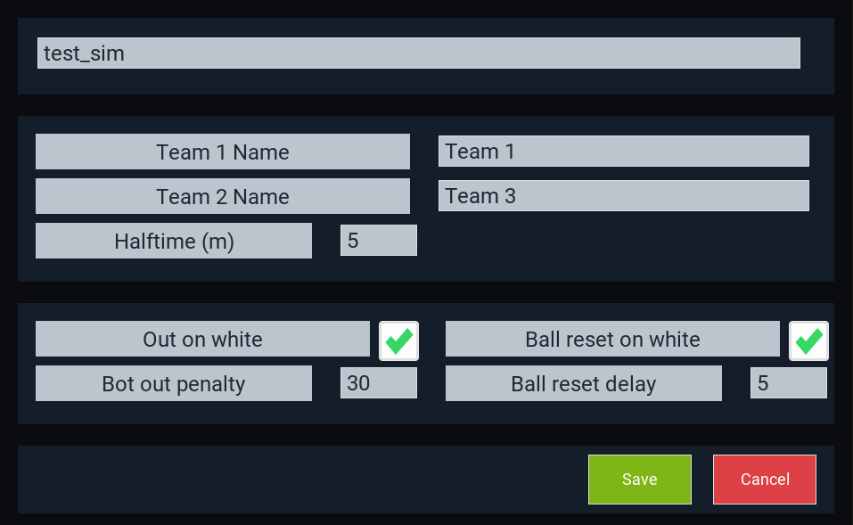

Simulation Presets¶
What is a simulation preset?¶
When running a simulation with EV3Sim, you need two things:
A world to simulate and interact with, and
Robots to interact with the simulated world.
A simulation preset specifies which world to simulate, the bots that will be placed in the simulation, and any settings specific to that world.
As an example, one simulation preset provided by default is the soccer_competition preset. This specifies the world (preset type) as Soccer, and then specifies which bots are on which team.
It also specifies soccer specific settings, such as the Team Names, rulings for out on white, and halftime length.
Changing the robots in a simulation¶
While selecting a simulation preset the following icon should light up:

From here, you can select a bot from those you have defined, and select them for Team 1 or Team 2. After selecting the bot for Team 1, Bot 1, you then select the bot for Team 2, Bot 1, and so on. At any point if you have enough bots in the simulation, you can click “Done” to finish.
Changing simulation settings¶
Clicking the settings cog instead of the robot button will take you to the settings page for you simulation preset:
 

{kind=link}
Creating a simulation preset¶
Rather than editing an existing preset you can also create your own by clicking the plus button on the list view for simulation presets. This will prompt you to select a world type (Such as Soccer or Rescue).

Running the simulation preset¶
To run your simulation presets, you can press the big green play button to begin.

However, if you installed with the windows one-click executable, you can also run the simulation simply by double clicking a file!
Navigate to your workspace folder, and open the sims directory. This should contain all of the sims you have created in the form of .sim files.
Double clicking should run the sim by default. Otherwise, you can right click and select one of two actions:
Open: Run the simulation.
Edit: Open the settings page for the simulation.